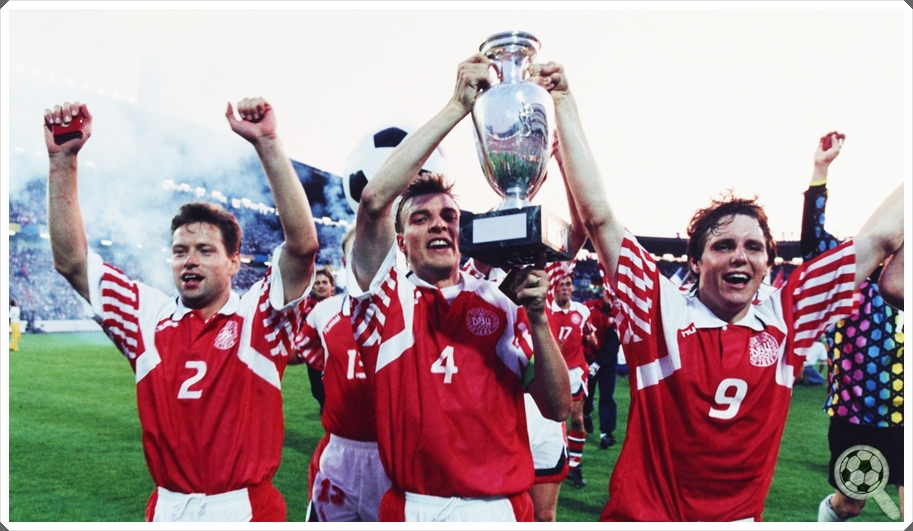

TÍTULOS
A Dinamarca conquistou o título da Eurocopa uma vez, em 1992. Foi uma conquista histórica e surpreendente, já que a Dinamarca não havia se classificado inicialmente para o torneio. Eles foram chamados de última hora para substituir a Iugoslávia, que foi desqualificada devido a sanções da ONU. A Dinamarca aproveitou a oportunidade e acabou vencendo o torneio ao derrotar a Alemanha na final por 2-0. Este é o único título da Eurocopa da história da seleção dinamarquesa.